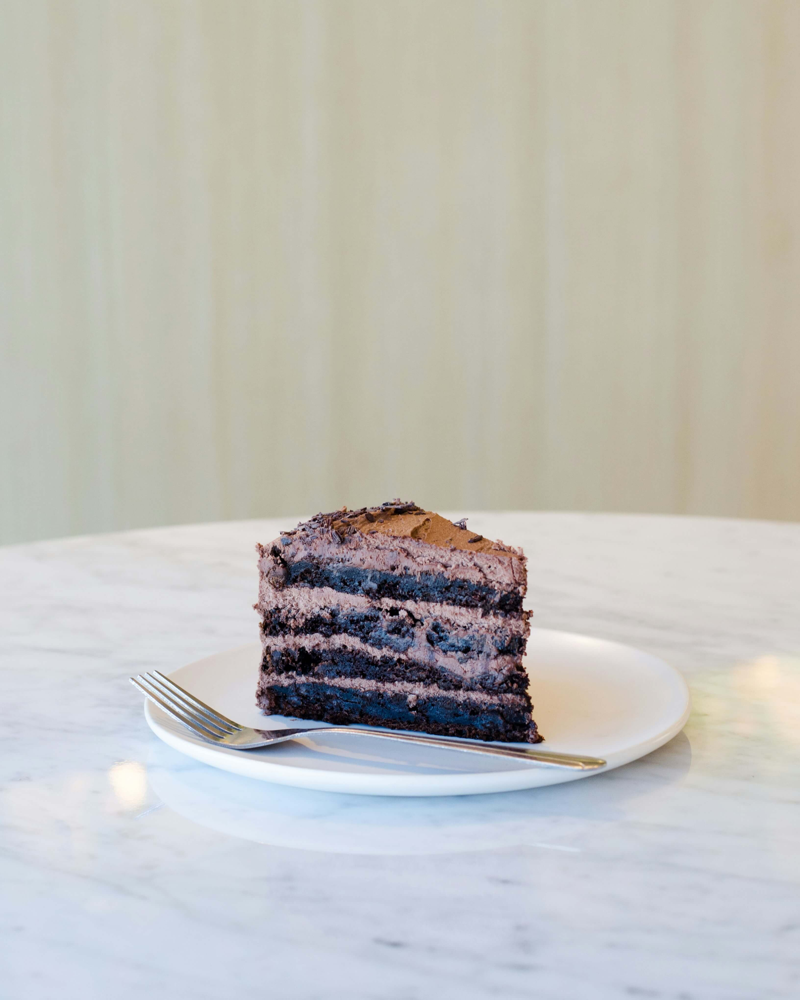

Sourdough Bread
Our signature sourdough bread is crusty on the outside and soft inside, made with a traditional starter and baked fresh every morning. A favorite among customers who love authentic artisan bread.
Fresh bread and cakes made daily in Your City.
Welcome to Example Bakery, your neighborhood destination for fresh bakery goods since 2015. We started with a simple goal: bring homemade bread, artisan pastries and custom cakes to our community using traditional recipes passed down through generations. Every item on our menu is baked fresh each morning using quality ingredients, no shortcuts and no preservatives.
Our signature sourdough bread is crusty on the outside and soft inside, made with a traditional starter and baked fresh every morning. A favorite among customers who love authentic artisan bread.

Rich chocolate layers with creamy frosting.
Flaky, buttery, and baked to golden perfection every morning. Pairs perfectly with coffee for the ultimate homemade breakfast experience.
Every loaf of our sourdough bread starts with a natural starter that has been maintained for years. We mix, knead, and let the dough rest for over 12 hours to develop its signature tangy flavor and chewy texture. No shortcuts, no artificial yeast, just time, patience, and quality flour. This slow process is what makes our bread different from mass-produced alternatives.
Picking a birthday cake can feel overwhelming with so many options. First, consider the flavor the birthday person loves most. Second, think about portion size based on your guest count. Third, decide between fresh cream and buttercream frosting depending on the season. Fourth, order at least three days in advance for custom designs. Finally, do not be afraid to ask our bakers for recommendations, we are happy to help you choose.
We source our flour, butter, and eggs from local suppliers whenever possible. Fresh ingredients not only taste better, they also support our local farming community and reduce our environmental footprint. When you choose a neighborhood bakery over mass-produced alternatives, you are choosing better taste and a more sustainable food system.
Yes, we accept custom cake orders for birthdays, weddings and other celebrations. Please contact us at least 3 days in advance.
We are open daily from 7:00 AM to 8:00 PM, including weekends.
We offer a small selection of gluten-free bread and pastries. Please ask our staff for availability.
123 Baker Street, Your City
Phone: 555-123-4567
Email: hello@examplebakery.com